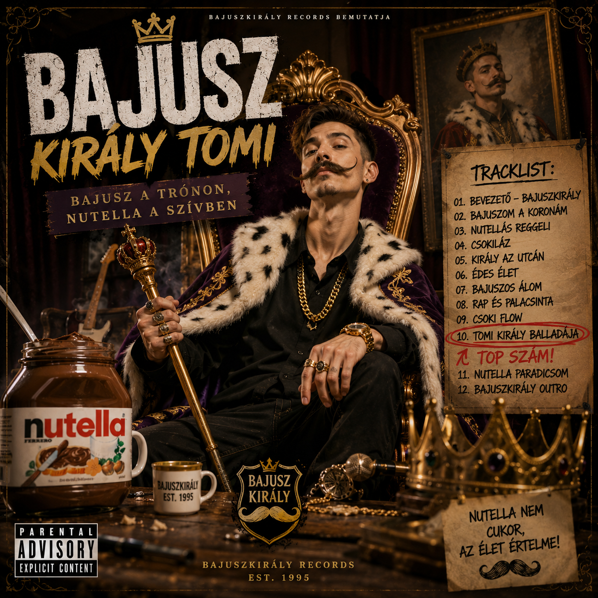
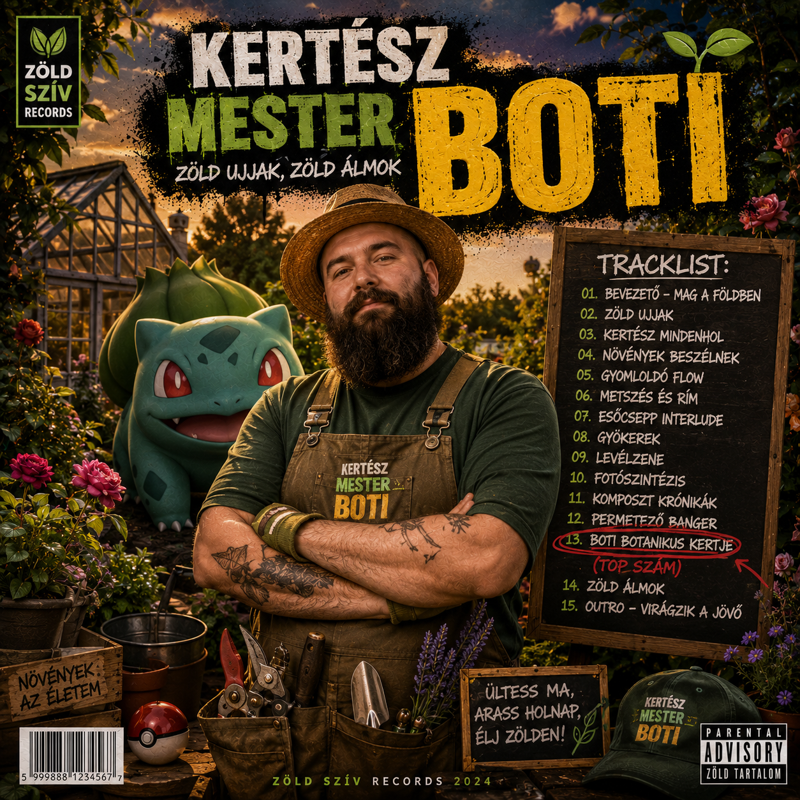
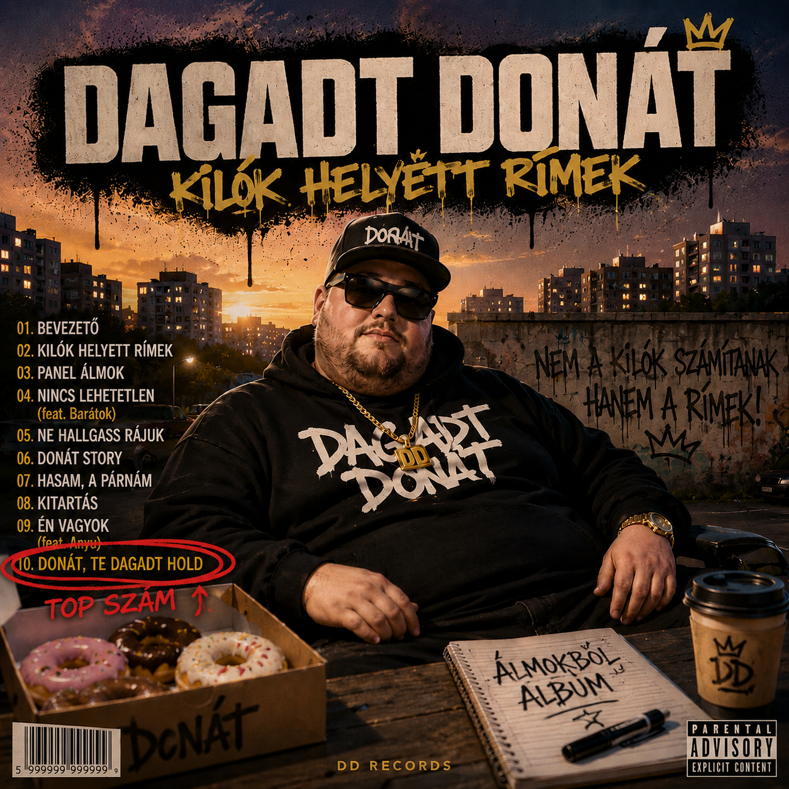
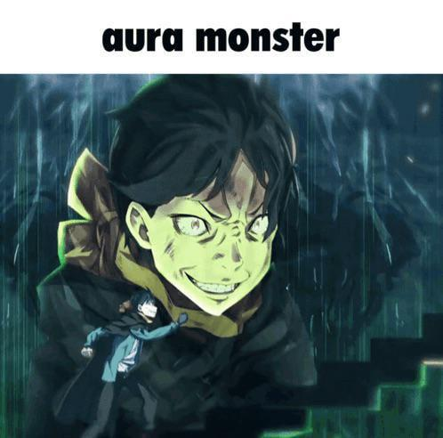
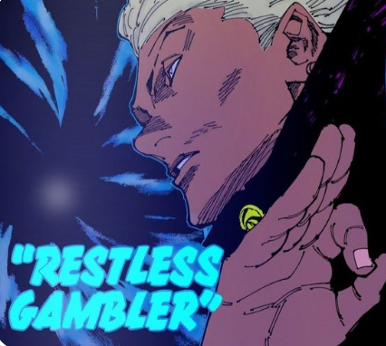
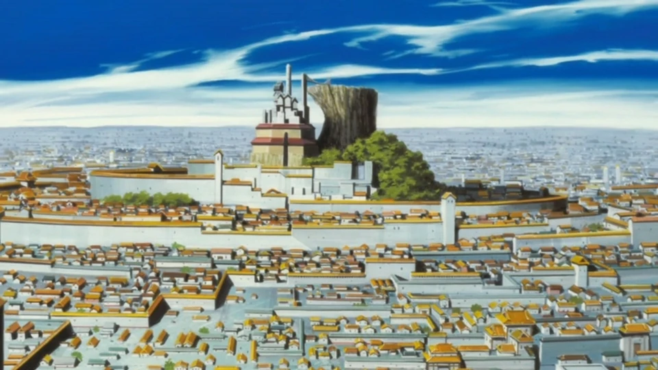
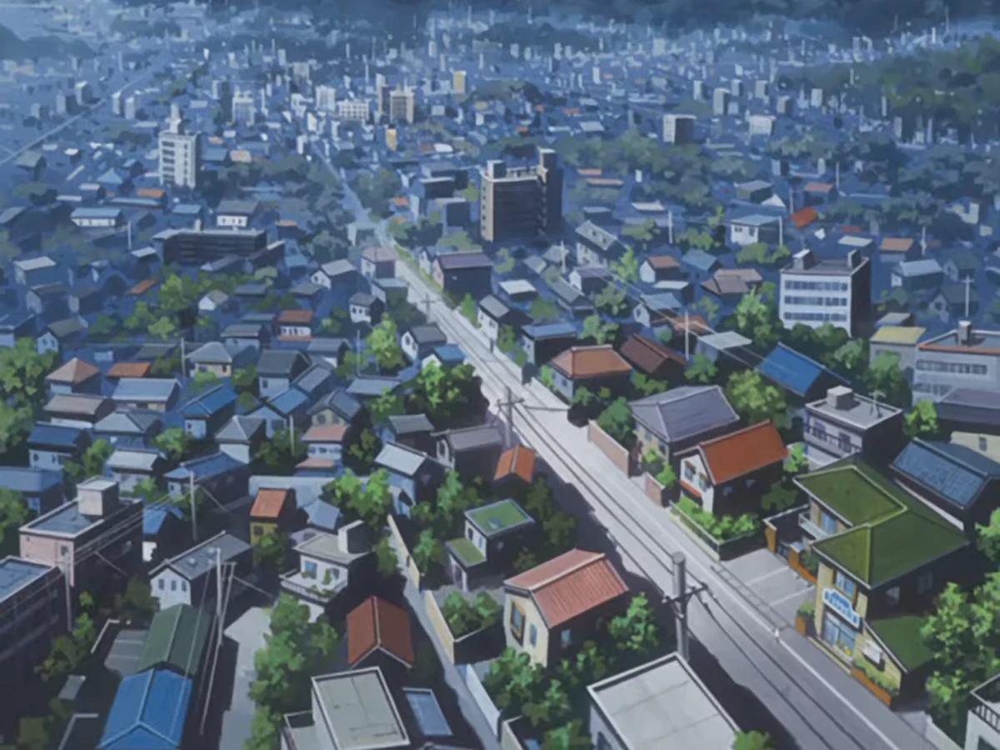
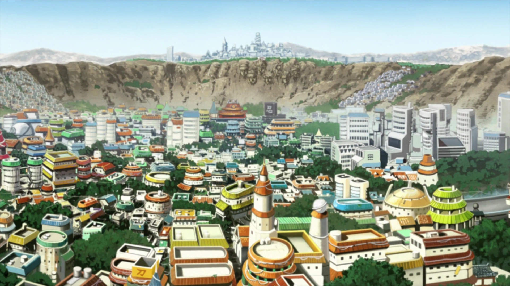

Sok szeretettel üdvözöl a
GD Summer Camp
(készítette: Papp Tamás, Papp Marcell)
Koncertek
Előadók
Bajusz Király Tomi

Bajusz Király Tomi legnagyobb számaKertész Mester Boti

Kertész Mester Boti legfelkapottabb nótájaDagadt Donát

Dagadt Donát legnagyobbra nőtt számaRobbantós Oszkár
Sport
AuraClimb – Lépcsőmászó Sport

LARP Bajnokság
DoomScroll Marathon

Luck League – A Szerencsejáték Bajnokság

Kirándulások
Helyszínek
Soul Society

A Soul Society a Soul Society világában a lelkek birodalma, ahol a halott emberek lelkei élnek. Itt működnek a lélekőrök (Shinigamik), akik megvédik az embereket a Hollowoktól, és fenntartják az egyensúlyt az élők és a holtak világa között. A Soul Society központja a Seireitei, ahol a 13 Őrszázad (Gotei 13) állomásozik. A történet egyik legfontosabb helyszíne, ahol számos csata és fontos esemény zajlik.
Karakura Town

A Karakura Town a Bleach történetének fő helyszíne. Ez egy látszólag átlagos japán város, ahol Ichigo Kurosaki és barátai élnek. Karakura különleges, mert rendkívül magas a spirituális energiája, ezért gyakran jelennek meg itt Hollowok és más természetfeletti lények. Emiatt a Soul Society számára is kiemelten fontos helyszín, és a történet számos jelentős eseménye itt játszódik.
Hueco Mundo

A Hueco Mundo a Bleach világában a Hollowok és Arrancarok birodalma. Egy hatalmas, sivatagszerű világ, amelyet fehér homok, örök éjszaka és egy óriási hold jellemez. Itt található Las Noches, az Arrancarok erődje. A történet során Sōsuke Aizen ezt a helyet használja fő bázisaként, és innen irányítja seregeit. Hueco Mundo a Soul Society és az emberek világa mellett a Bleach univerzumának egyik fő dimenziója.
Marley

A Marley az Attack on Titan világának egyik legerősebb nemzete. Egy katonailag fejlett birodalom, amely hosszú ideig uralta a titánok erejét, és az eldiaiakat másodrendű állampolgárként kezelte. Marley a történet későbbi részeiben válik központi helyszínné, amikor kiderül, hogy a falakon túli világ fejlett civilizációkból és országokból áll. A Marley és a Paradis Island közötti konfliktus a sorozat egyik legfontosabb történetszála.
Paradis

A Paradis Island az Attack on Titan történetének fő helyszíne. Ez egy hatalmas sziget, amelyet három óriási fal – Maria, Rose és Sina – vesz körül, hogy megvédje az embereket a titánoktól. A sziget lakói sokáig azt hitték, hogy ők az emberiség utolsó túlélői. Később azonban kiderül, hogy a falakon túl egy sokkal nagyobb világ létezik, és Paradis lakói az eldiai nép leszármazottai. A sziget a Marley elleni konfliktus központjává válik, és kulcsszerepet játszik a történet végkifejletében.
Konohagakure

A Konohagakure, más néven a Rejtett Lomb Falu, a Naruto történetének fő helyszíne. A Tűz Országában található, és az egyik legerősebb nindzsafalu. Itt él Naruto Uzumaki, valamint számos híres nindzsa. A falut a Hokagék vezetik, akik a közösség legerősebb és legelismertebb harcosai. Konohagakure a béke, az összetartás és a nindzsák fejlődésének központja, ugyanakkor sok fontos csata és történelmi esemény helyszíne is.
Jelentkezés
| Időpont | Helyszín | Férőhelyek |
|---|---|---|
| 2026.06.30 | Soul Society | 60 |
| 2026.06.18 | Hueco Mundo | 85 |
| 2026.07.06 | Karakuratown | 70 |
| 2026.07.15 | Paradie | 50 |
| 2026.07.29 | Marley | 90 |
| 2026.08.16 | Tokushima | 100 |